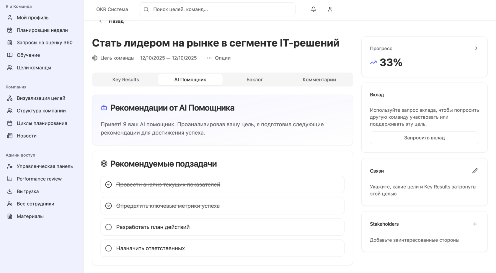
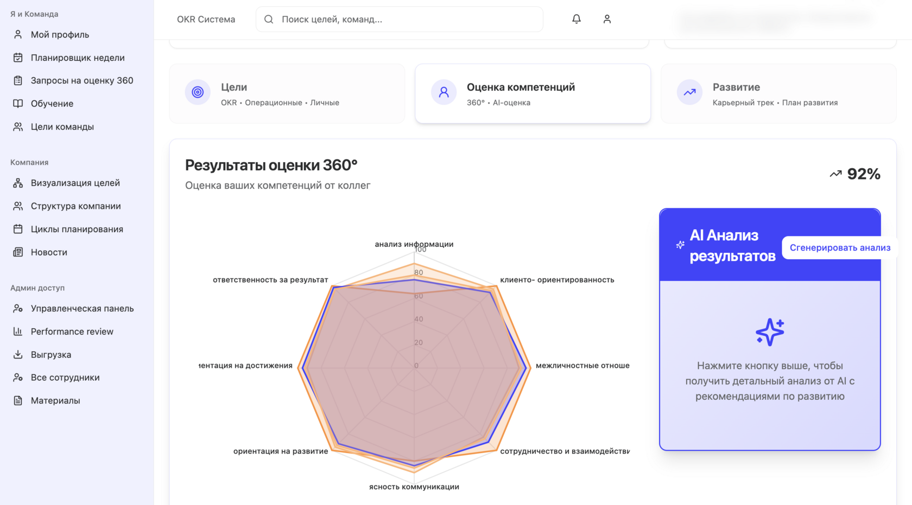
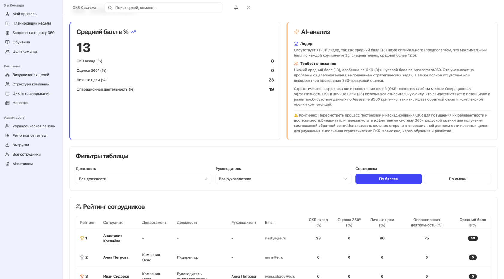

Внедрение Performance Review системы c AI-подсказками для крупнейшего производителя детского питания
Быстрый рост, жесткие регуляторные требования и усложнение операционной модели
Крупнейший российский производитель детского питания (7 000+ сотрудников, сеть заводов и лабораторий, R&D-центры и федеральный отдел продаж) столкнулся с типичной для быстрорастущих FMCG-компаний проблемой: увеличение масштабов бизнеса не сопровождалось обновлением системы оценки эффективности сотрудников.
У компании высокие требования к качеству процессов: от соблюдения технологических карт на производстве до разработки инновационных рецептур и выполнения KPI по дистрибуции. Тем не менее оценка результатов сотрудников происходила по устаревшей схеме, основанной на ручных Excel-формах, субъективных мнениях руководителей и несогласованности целей между подразделениями.
Проблема: несогласованность целеполагания, отсутствие прозрачной отчетности и перегруз команды HRBP
1. Неконсистентность целей и отсутствие общей системы OKR
Производство, R&D, коммерческий блок и контроль качества жили в собственных приоритетах. Цели не были выровнены «сверху вниз», сотрудники не понимали связи своих задач с бизнес-целями. Это снижало управляемость и тормозило реализацию стратегических инициатив: выход новых продуктов, масштабирование экспортных поставок, повышение эффективности линий.
2. Субъективность Performance-оценок
Отчет о выполнении целей формировался "пост-фактум" на основе заполнения руководителями анкеты KPI. Была реализована только оценка 180, учитывающая обратную связь только от руководителя и от самого сотрудника. В результате многие оценки были субъективны и не позволяли на них опираться при формировании кадрового резерва, что вызывало недоверие и демотивацию со стороны персонала и не позволяло выстроить полноценную систему преемственности.
3. Перегруз HR-команды в отчетные периоды
На сбор и свод данных по Performance Review от разных подразделений уходило 5-6 недель. Бизнес-партнеры вручную пересчитывали коэффициенты, сводили Excel, проверяли корректность оценок. Из-за этого Performance Review превращался в процесс, который все считали трудоемким и формальным.
4. Сложность выявления высокопотенциальных сотрудников
У компании был сильный кадровый резерв, но отсутствовали данные для объективной оценки потенциала и результатов. Невозможно было выстроить Talent Matrix, чтобы определить HiPo, просмотреть зоны риска текучести и рассчитать инвестиции в развитие.
Компания поставила задачу полностью перестроить систему оценки эффективности и перейти на современную модель Performance Management, основанную на данных и прозрачных бизнес-целях.
Компания выбрала платформу EmplyFlow, так как она объединяет весь цикл Performance-управления: постановку OKR, промежуточные check-in, оценку 360, итоговый Review и AI-аналитику, позволяющую выявлять закономерности в результатъ и потенциальные риски
Решение: внедрение EmplyFlow Performance Review с AI-аналитикой, OKR и оценкой 360°
Этап 1. Внедрение модульной системы целей: OKR, каскадирование и блок с KPI
В компании был внедрен управляемый цикл каскадирования OKR: доступ к платформе EmplyFlow открывается каждому уровню оргструктуры только после того, как предыдущий (вышестоящий) уровень полностью сформировал свои OKR, прошёл внутренние согласования и официально «закрыл» этап каскадирования вниз.
У всех сотрудников появилась чёткая связь их задач с миссией компании и соблюдена логика постановки целей. Первой доступ получила управляющая команда - все стратегические OKR были утверждены CEO и выгружены в платформу как «база каскадирования».
Система автоматически запланировала в календаре 1:1 встречи с помощью AI-планировщика для согласования промежуточных результатов, корректировки плана и оценки рисков

Этап 2. Полноценная оценка 360° для производственного, R&D и коммерческого блоков
Система автоматически запланировала в календаре 1:1 встречи с помощью AI-планировщика для согласования промежуточных результатов, корректировки плана и оценки рисков
Платформа позволила настроить разные модели 360-оценки под категории сотрудников:
Для производства: точность соблюдения регламентов, взаимодействие в смене, ответственность за качество.
Для R&D: инновационность, способность к экспериментированию, коммуникация с производством.
Для продаж: клиентоориентированность, проактивность, командное влияние.
AI-модуль анализировал текстовые комментарии и автоматически выделял паттерны: сильные стороны, повторяющиеся сообщения, зоны риска.

Этап 3. Итоговый Performance Review без Excel: автоматическое сведение оценок и AI-анализ по компонентам
Вместо десятков разрозненных источников — единое «окно» для принятия решений.
Платформа EmplyFlow собрала воедино данные из разных источников:
Прогресс по OKR
Автоматически рассчитанный процент выполнения KR, качество формулировок, динамика прогресса по чек-инам.
Оценка 360°
Комментарии, средние баллы, расхождения между самооценкой, оценкой руководителя и коллег.
Достижения по проектам
Участие в проектных командах, достижения в рамках задач, статус выполнения, отзывы руководителей проектов.
Поведенческие индикаторы
Лидерство, проактивность, соблюдение стандартов качества и безопасности, вовлеченность.
AI-алгоритм определяет команды с лучшими практиками (Best Performers), команды, у которых есть риск недостижения целей, команды с проблемами лидерства или коммуникаций (по паттернам 360°), исследования нестандартных провалов или всплесков результативности. Система позволяла управленцам видеть:
какие департаменты тянут организацию вперед,
где есть риски выгорания, текучести, дефицита компетенций,

Результаты проекта
Этот проект показал, что переход на цифровую систему Performance Review с AI, OKR и 360-оценкой позволяет компании не только повысить управляемость и прозрачность процессов, но и существенно улучшить качество управленческих решений. Благодаря плотной работе нам удалось создать единую, объективную и масштабируемую систему оценки, охватывающую все уровни компании — от топ-менеджмента до сотрудников производственных линий. Ниже ключевые результаты в количественном выражении, на которые нам удалось повлиять:
1.Укрепление кадрового резерва и повышение качества управленческих решений
На основе интегрированных данных OKR, 360 и KPI мы сформировали обновлённую Talent Matrix, охватившую 5 800 сотрудников. Выявлено 240 сотрудников с высоким потенциалом и определены зоны риска по нескольким ключевым подразделениям. Это позволило нам перейти от реактивного управления талантами к планированию развития и преемственности.
2.Улучшение ключевых метрик управления:
степень согласованности целей между департаментами выросла с 45% до 87%;
процент сотрудников, понимающих свой вклад в достижение стратегических задач, увеличился с 52% до 81%;
доля целей, имеющих прямую привязку к бизнес-показателям, выросла с 33% до 72%.
Сбор, сверка и консолидация данных, которые ранее занимали недели, теперь выполняются за несколько дней без использования Excel. Руководители получили структурированную аналитику и качественную основу для обсуждения результатов с командами.